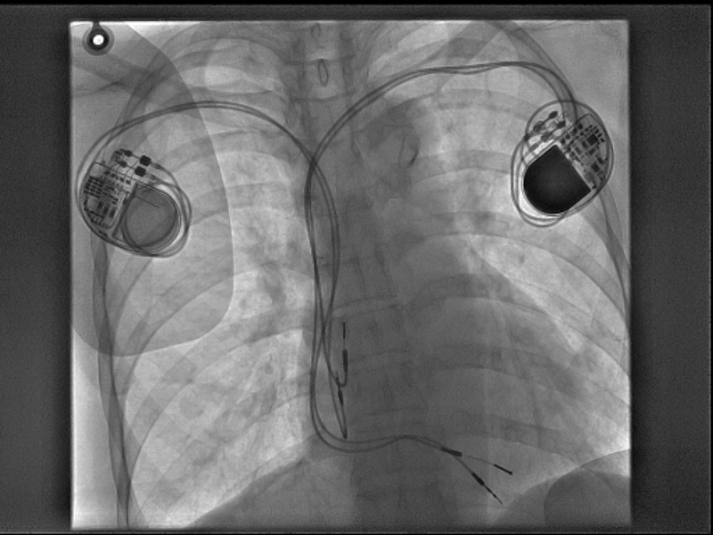
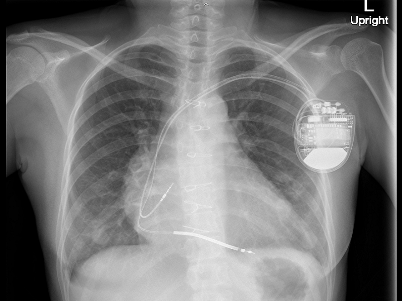
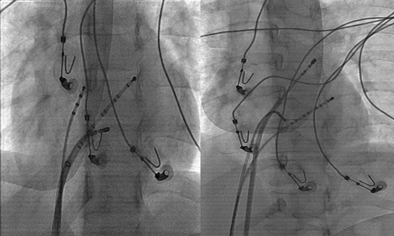

SYN
COPE
2018 ESC Guidelines for the diagnosis and management of syncope
- Reflex Syncope
- Education and Life-style Measures (I)
- Severe or Recurrent Form
- Fludrocortisone or Midodrine for low BP type.(IIb)
-
Counter-pressure Maneuver (IIa),
Tilt Training (IIb) for those with prodrome. - ILR guided management (I) for those with minimal or no progrome.
- Stop or Reduce hypotensive drugs (IIa)
- Cardiac Pacing (IIa-IIb) for dominant cardioinhibitory and age>40.
- Syncope due to Orthostatic Hypotension
- Education and Life-style Measures (I)
- Adequate Hydration and Salt Intake (I)
- Discontinue or Reduce Vasoactive Drugs (IIa)
- If symptoms persist
- Compression Garments, Counter-pressure Maneuver, Head-up Tilt Sleeping, Midrodrine, Fludrocortisone (IIa)
Specific Therapy for Cardiac Syncope

PACEMAKER for syncope with...
Symptomatic sinus node dysfunction (I)
Asymptomatic sinus node dysfunction (IIa)
High grade AV block(I)
Bifascicular block and +EPS for HV>70 or inducible AV block (I)
Bifascicular block and +ILR (I)
Symptomatic sinus node dysfunction (I)
Asymptomatic sinus node dysfunction (IIa)
High grade AV block(I)
Bifascicular block and +EPS for HV>70 or inducible AV block (I)
Bifascicular block and +ILR (I)

ICD for syncope with...
VT and LVEF ≤35% (I)
Prior MI and +EPS for VT (I)
High-risks HCM (I)
LQTs with adequate beta blockers (IIa)
Spontaneous type I Brugada (IIa)
VT and LVEF ≤35% (I)
Prior MI and +EPS for VT (I)
High-risks HCM (I)
LQTs with adequate beta blockers (IIa)
Spontaneous type I Brugada (IIa)

Catheter ablation for syncope due to SVT or VT (I)